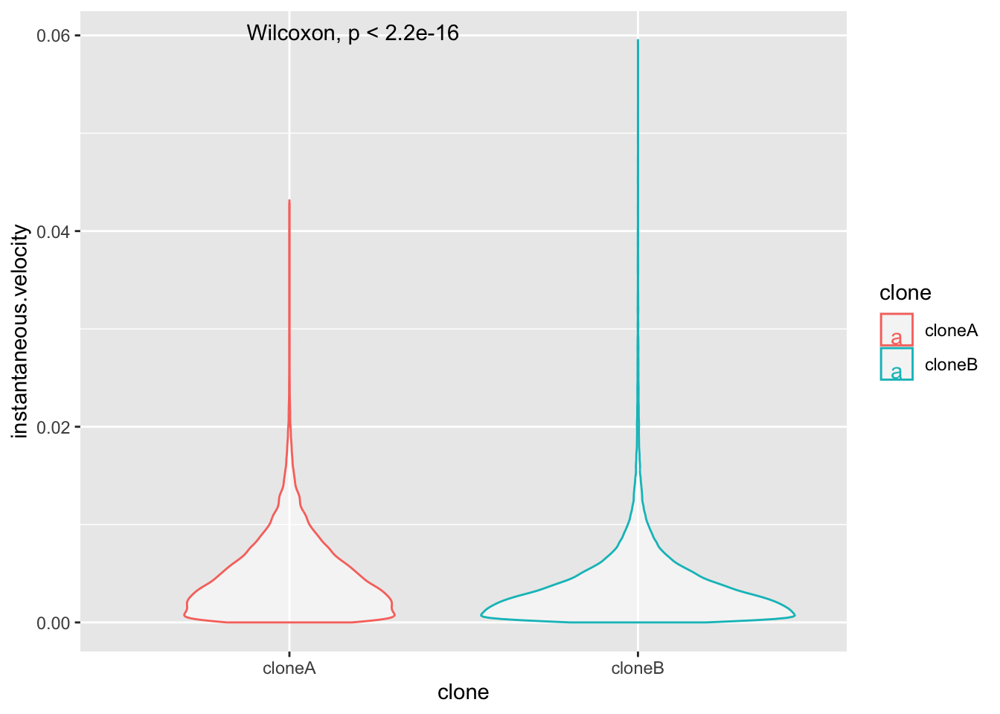

########################################################
#WORKSHOP 3: CELL MOVEMENT DATA
########################################################BIO00066I Workshop 3
Cell Biology Data Analysis Workshop 3
Work in progress
This page is a work in progress.
1 Learning objectives
Philosophy
Workshops are not a test. You may make a lot of mistakes - that is fine. It’s OK to need help. the staff are here to help you, so don’t be afraid to ask for help! :-)
1.1 Technical skills
Today we will work with plotting movement data from the Livecyte microscope.
We will learn some new R plotting skills:
-
facet_wrapa method to plot one variable split up over different treatments (or chromosomes, or days, or replicates) - how to create a correlation data frame using the
correlatefunction. This allows us to explore many correlations between different metrics. Typically, these metrics are stored in the columns of our data frames.
1.2 Thinking like a data scientist
We encourage you to develop your data handling skills. By:
- keeping our script clear, simple, and well-annotated
- developing your own habits to keep your awareness on what data the data contains
Know your data!
To understand the biology captured in the data, you need to know what is in the data. At each step, be sure you know the rows, the columns and what they mean. Keep notes about this in your script.
2 Introduction
2.1 The biology
Today, we will continue our quest to understand mesenchymal stromal cells (MSCs). Remember, the two clones we are studying were both obtained from one person, and they have been transformed with telomerase to make them immortal (so they don’t age). Then, they have been cultured in a lab for years.
In workshop 2, we saw that these two clones were different shapes. This time, we examine how they move.
Sometimes, asking a good question is the most important step!
Why do these clones maintain different shapes after growing in the lab for so long? Why don’t they revert to being the same?
2.2 The data
In this workshop, we first examine cell movement data that was collected in an automated way by the Livecyte microscope. This shows something interesting, but it is not very reliable, because the Livecyte is not perfect at tracking individual cells.
People are better at tracking individual cells. So we then look at some manual tracking data. We will se such metrics as euclidean.distance (how far the cells have moved), mean.speed (how fast they go), and meandering.index (how much they meander and change their minds about where they are going!).
While we could guess how the cells differ from looking down the microscope, we can use our data science skills in two ways to enrich our perception, by:
- showing metrics with plots - this will enhance out intuition
- using statistical tests to test our intuitions
- the tests will determine which metrics (if any) are significantly different between the clones
This work transforms intuitions into evidence.
2.3 Research questions
- Do the two mesenchymal stromal cell clones move differently?
- What data set(s) are most reliable?
- What are the best parameters to distinguish the clones?
3 Exercises
3.1 Setting up
- Start up R Studio, and open your Project.
- Open the script your worked on in workshop 2
We will keep working on this script. We advise you to mark clearly where workshop 1, workshop 2 and workshop 3 are. Something like this will help:
Then clear the previous work, and load the libraries we need:
3.2 Automated Livecyte cell movment data
Now read in the data from the file all-cell-data-FFT.filtered.2024-01-19.tsv. This contains some cell movment data.
# Read the automated Livecyte data
cells <-read_tsv(url("https://djeffares.github.io/BIO66I/all-cell-data-FFT.filtered.2024-01-19.tsv"),
col_types = cols(
clone = col_factor(),
replicate = col_factor(),
tracking.id=col_factor(),
lineage.id=col_factor()
)
)Lets see what data we have:
names(cells)
Keep it simple
In data science, we can easily get confused. keep the data as simple as you can (but no simpler).
In the spirit of keeping it simple, let’s retain only the columns in this data frame that we need, using the select function. The cells data framt still have all the data, so it is not lost.
names(cells) [1] "clone" "replicate"
[3] "frame" "tracking.id"
[5] "lineage.id" "position.x"
[7] "position.y" "pixel.position.x"
[9] "pixel.position.y" "volume"
[11] "mean.thickness" "radius"
[13] "area" "sphericity"
[15] "length" "width"
[17] "orientation" "dry.mass"
[19] "displacement" "instantaneous.velocity"
[21] "instantaneous.velocity.x" "instantaneous.velocity.y"
[23] "track.length" "perimeter"
[25] "length.to.width" #select only the columns we need
cell.move.data <- select(cells,
clone,
replicate,
displacement,
track.length,
instantaneous.velocity
)
#check that we have
names(cell.move.data)[1] "clone" "replicate" "displacement"
[4] "track.length" "instantaneous.velocity"#get a simple summaru, using summary and also glimpse
summary(cell.move.data) clone replicate displacement track.length
cloneA:55555 1:30373 Min. : 0.00 Min. : 0.00
cloneB:36330 2:36393 1st Qu.: 4.72 1st Qu.: 10.80
3:25119 Median : 22.17 Median : 46.59
Mean : 46.42 Mean : 91.31
3rd Qu.: 62.35 3rd Qu.:126.91
Max. :487.55 Max. :984.29
instantaneous.velocity
Min. :0.0000000
1st Qu.:0.0008046
Median :0.0025395
Mean :0.0035334
3rd Qu.:0.0050956
Max. :0.0448467 glimpse(cell.move.data)Rows: 91,885
Columns: 5
$ clone <fct> cloneA, cloneA, cloneA, cloneA, cloneA, cloneA,…
$ replicate <fct> 1, 1, 1, 1, 1, 1, 1, 1, 1, 1, 1, 1, 1, 1, 1, 1,…
$ displacement <dbl> 0.00, 14.96, 0.00, 10.92, 12.93, 14.13, 13.13, …
$ track.length <dbl> 0.00, 14.96, 0.00, 10.92, 15.74, 21.72, 26.23, …
$ instantaneous.velocity <dbl> 0.000000000, 0.010829316, 0.000000000, 0.003954…Now save your working data:
#lets save our data
save.image("BIO00066I-workshop3-cell-movement-metrics.Rda")
#you can load this any time later with:
load("BIO00066I-workshop3-cell-movement-metrics.Rda")3.3 Making plots
let’s see how clone A and clone B move. First, we’ll plot the instantaneous.velocity:
#instantaneous.velocity - geom_violin
ggplot(cell.move.data,aes(x=clone,y=instantaneous.velocity,colour=clone))+
geom_violin(alpha=0.5)+
stat_compare_means()
This plot isn’t very revealing is it? That is because most of the instantaneous.velocity values are very low, and the data are certainly not normally distributed. Biological data is often like this. Plotting metrics on a log scale is often the solution. Log2 or log10 scales are commonly used.
Adjust this plot yourself
So that you plot y=log10(instantaneous.velocity). Does it look better?
Enhance the plot with facet_wrap
This time, show the repeats by adding a new line to the plot code:
facet_wrap(~replicate)+
What is facet_wrap?. Our first categorical value that we split up the data into was clone A and clone B. facet_wrap splits the data up again into a second categorical value, and plots each category. In this case our second category was ~replicate.
If these adjustments to the code worked, you will end up with a plot like this. What does this tell you about clone movement?.

Optional
Use your plot code to explore, displacement, track.length and/or instantaneous.velocity.
3.4 Manual tracking data
Sometimes, the automated measurements are not the best quality. In this case, we know that the Livecyte microscope is not very good at tracking cells, so the cell movement metrics are not as good as we would like.
So Amanda spent many hours manually tracking cells. These results were processed into manual tracking data. First, load the data and of course examine what you have.
#load the manual tracking data
track <-read_tsv(url("https://djeffares.github.io/BIO66I/A1-and-B2-tracking.data.tsv"))
#check it out
glimpse(track)Rows: 201
Columns: 13
$ LID <dbl> 1, 1, 1, 1, 1, 1, 1, 1, 1, 1, 1, 2, 2, 2…
$ TID <dbl> 1, 2, 3, 4, 5, 7, 8, 9, 10, 11, 12, 1, 2…
$ track.duration <dbl> 230, 1587, 1702, 2484, 2484, 1725, 2484,…
$ track.length <dbl> 80.850, 633.822, 711.651, 963.285, 870.3…
$ meandering.index <dbl> 0.08401856, 0.20254946, 0.47929912, 0.13…
$ euclidean.distance <dbl> 6.79290, 128.38031, 341.09370, 128.90071…
$ mean.speed <dbl> 0.3515217, 0.3993837, 0.4181263, 0.38779…
$ track.present.at.start.or.end <lgl> TRUE, FALSE, FALSE, TRUE, TRUE, FALSE, T…
$ track.never.divides <lgl> FALSE, FALSE, FALSE, FALSE, FALSE, FALSE…
$ start.time.total.time <dbl> 0.00000000, 0.04166667, 0.30681818, 0.59…
$ end.time.total.time <dbl> 0.03787879, 0.30303030, 0.58712121, 1.00…
$ track.duration.total.time <dbl> 0.03787879, 0.26136364, 0.28030303, 0.40…
$ cell.line <chr> "A1", "A1", "A1", "A1", "A1", "A1", "A1"…names(track) [1] "LID" "TID"
[3] "track.duration" "track.length"
[5] "meandering.index" "euclidean.distance"
[7] "mean.speed" "track.present.at.start.or.end"
[9] "track.never.divides" "start.time.total.time"
[11] "end.time.total.time" "track.duration.total.time"
[13] "cell.line" In this data, TID is the Livecyte tracking ID, a unique number that the microscope gives to each ‘object’ it can identify. LID is the Livecyte lineage ID. This keeps track of the cell lineage (ie: the initial cells, and the subsequent daughter cells that are derived from it as it divides). When a cell divides, both ‘daughter cells’ keep the same lineage ID, but each is assigned a new unique tracking ID.

3.5 Plotting manual tracking data
Let’s start by looking at the distance that each cell has traveled during the experiment. This is recorded as euclidean.distance. This is the shortest distance between two points, so it does not take any meanderings into account. We can compare the clones (cell.line) like so:
#compare euclidean.distance between cell lines
ggplot(track, aes(x=cell.line,y=euclidean.distance))+
geom_boxplot()+
stat_compare_means()
Improve the plot
Try these things to improve this plot:
- use
geom_violininstead ofgeom_boxplot - adding
theme_classic - making the x-axis and y-axis look better with
xlab("something")andylab("something") - giving the plot a title with
ggtitle("top title", subtitle ="sub text")
Optional: alter the plot
When you have the plot looking the way you like, examine some of the other cell movement metrics. To find out what is available, use names(track).
3.6 Correlations abound!
With biological data (and data from many other sources), different measurements of the same set of ‘things’ are often correlated. For example, human height and weight are strongly correlated. So it is with cells.
We could examine each correlation one by one, like so:
#examine whether track.length and mean.speed are correlated
cor.test(track$track.length,track$mean.speed,method="spearman")
Spearman's rank correlation rho
data: track$track.length and track$mean.speed
S = 701096, p-value = 1.92e-13
alternative hypothesis: true rho is not equal to 0
sample estimates:
rho
0.4741649 But since there are 11 cell movment metrics, this would quickly become boring. And (just as importantly) the data would be a challenge to understand.
Fortunately, there is an easier way. First we use the correlate function to calculate all pairwise correlations. We save the correlation coefficients in the track.correlations data frame.
#calculate all pairwise correlations
track.correlations <-
track |>
correlate(method="spearman")Non-numeric variables removed from input: `track.present.at.start.or.end`, `track.never.divides`, and `cell.line`
Correlation computed with
• Method: 'spearman'
• Missing treated using: 'pairwise.complete.obs'#see what we have
head(track.correlations)# A tibble: 6 × 11
term LID TID track.duration track.length meandering.index
<chr> <dbl> <dbl> <dbl> <dbl> <dbl>
1 LID NA -0.148 0.0411 0.0346 0.0281
2 TID -0.148 NA -0.255 -0.268 0.221
3 track.duration 0.0411 -0.255 NA 0.840 -0.477
4 track.length 0.0346 -0.268 0.840 NA -0.345
5 meandering.index 0.0281 0.221 -0.477 -0.345 NA
6 euclidean.distan… 0.00902 -0.133 0.413 0.626 0.407
# ℹ 5 more variables: euclidean.distance <dbl>, mean.speed <dbl>,
# start.time.total.time <dbl>, end.time.total.time <dbl>,
# track.duration.total.time <dbl>Then we use pivot_longer ass we did in BIO00066I core workshop 1, to simplify the data format.

pivot_longer reshapes data. Notice that no data is lost. does.We will use pivot_longer this way:
#Adjust the name of the first column to "Variable1"
names(track.correlations)[1]="Variable1"
#simplify the data with pivot_longer
track.correlations.pivot <-
track.correlations |>
pivot_longer(-Variable1, names_to = "Variable2", values_to = "value")#plot them! ggplot(track.correlations.pivot, aes(Var1, Var2)) + geom_tile(aes(fill = value)) + geom_text(aes(label = round(value, 1))) + scale_fill_gradient(low = “white”, high = “red”)+ theme_classic()+ theme(axis.text.x = element_text(angle = 90, vjust = 0.5, hjust=1))
4 Reflection
5 After the workshop
5.1 Consolodation exercises
Optional